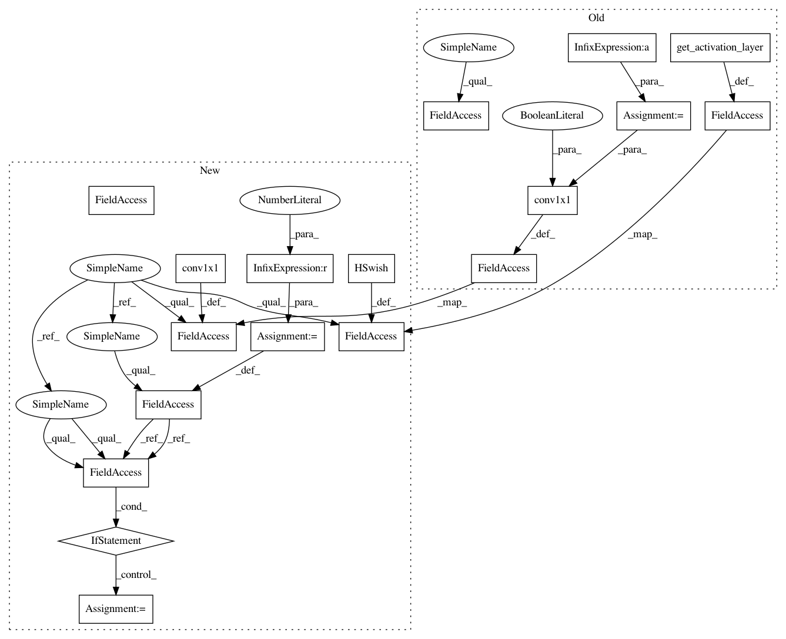

59ce4322d7b774394099f8af0381d1020623d919,pytorch/pytorchcv/models/common.py,SEBlock,__init__,#SEBlock#Any#Any#Any#Any#,764
Before Change
approx_sigmoid=False,
activation=(lambda: nn.ReLU(inplace=True))):
super(SEBlock, self).__init__()
mid_cannels = channels // reduction
self.pool = nn.AdaptiveAvgPool2d(output_size=1)
self.conv1 = conv1x1(
in_channels=channels,
out_channels=mid_cannels,
bias=True)
self.activ = get_activation_layer(activation)
self.conv2 = conv1x1(
in_channels=mid_cannels,
out_channels=channels,
bias=True)
After Change
Padding value for convolution layer.
groups : int, default 1
Number of groups.
bias : bool, default False
Whether the layer uses a bias vector.
return nn.Conv2d(
in_channels=in_channels,
out_channels=out_channels,
kernel_size=3,
stride=stride,
padding=padding,
dilation=dilation,
groups=groups,
bias=bias)
def depthwise_conv3x3(channels,
stride):
Depthwise convolution 3x3 layer.
Parameters:
----------
channels : int
Number of input/output channels.
strides : int or tuple/list of 2 int
Strides of the convolution.
In pattern: SUPERPATTERN
Frequency: 3
Non-data size: 18
Instances
Project Name: osmr/imgclsmob
Commit Name: 59ce4322d7b774394099f8af0381d1020623d919
Time: 2019-10-24
Author: osemery@gmail.com
File Name: pytorch/pytorchcv/models/common.py
Class Name: SEBlock
Method Name: __init__
Project Name: osmr/imgclsmob
Commit Name: 59ce4322d7b774394099f8af0381d1020623d919
Time: 2019-10-24
Author: osemery@gmail.com
File Name: chainer_/chainercv2/models/common.py
Class Name: SEBlock
Method Name: __init__
Project Name: osmr/imgclsmob
Commit Name: 59ce4322d7b774394099f8af0381d1020623d919
Time: 2019-10-24
Author: osemery@gmail.com
File Name: gluon/gluoncv2/models/common.py
Class Name: SEBlock
Method Name: __init__